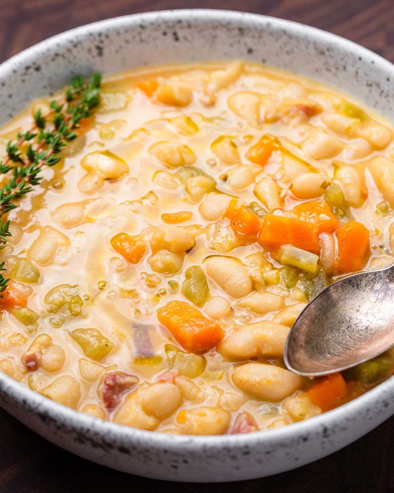

Tuscan Bean Soup

Description
This hearty bean soup is delicious but it does requie some time to make, i usually make a big batch so that i could
eat it for days. This Tuscan Bean soup goes well with sour-dough bread.
Ingredients
- 2 cans of cannalini beans
- a few stalks of celery
- a few carrots
- Pancheta
- Chicken or Vegetable stock
- Italian seasoning
- Balsamic vineagar
- Olive oil
- 1 large onion
- 2 cloves of garlic
Steps
- Finely chop onion, carrots, celery and garlic
- In a pot, drizzle olive oil and add pancheta cook until crispy
- Add chopped onion and garlic cook until transparent
- Add celery and carrots cook for ~5-8 minutes
- Add Cannalini beans and season with Italian seasoning
- Add 2 cups of stock and simmer for 30 minutes
- Enjoy!
Back Home